東京大学 2017年 理科 第6問
問題
点Oを原点とする座標空間内で、一辺の長さが1の正三角形OPQを動かす。
また、点A(1,0,0)に対して、∠AOPをθとおく。ただし0°≤θ≤180°とする。
(1) 点Qが(0,0,1)にあるとき、点Pのx座標がとりうる値の範囲と、θがとりうる値の範囲を求めよ。
(2) 点Qが平面x=0上を動くとき、辺OPが通過しうる範囲をKとする。Kの体積を求めよ。
解答
(1)
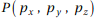とする。OP=1,∠POQ=60°を用いて
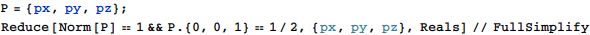
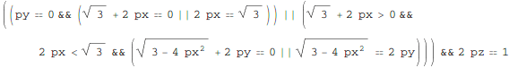
従って点Pのx座標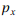の取りうる範囲は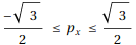
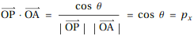だから、30°≤θ≤150°
(2)
線分OP上の点の座標を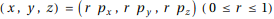、
点Q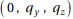として、
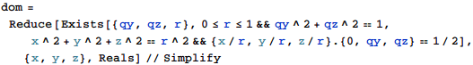
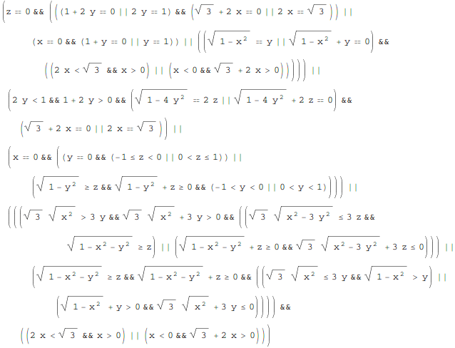
よって求める体積は
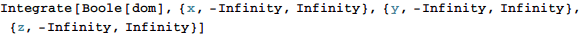
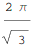
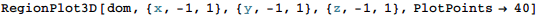
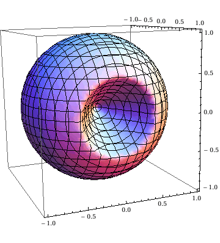
補足・感想
(2)は以下のようにNormを使った記述では解が求まらなかったので、試行錯誤が必要だった。
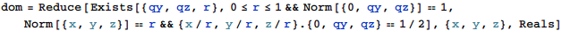